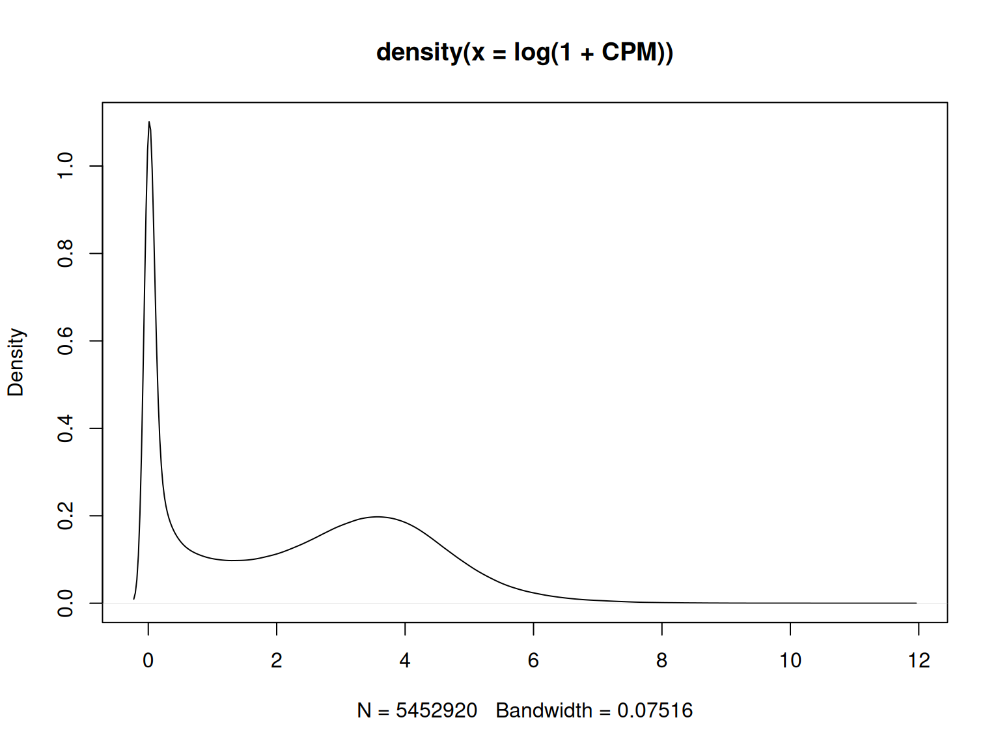
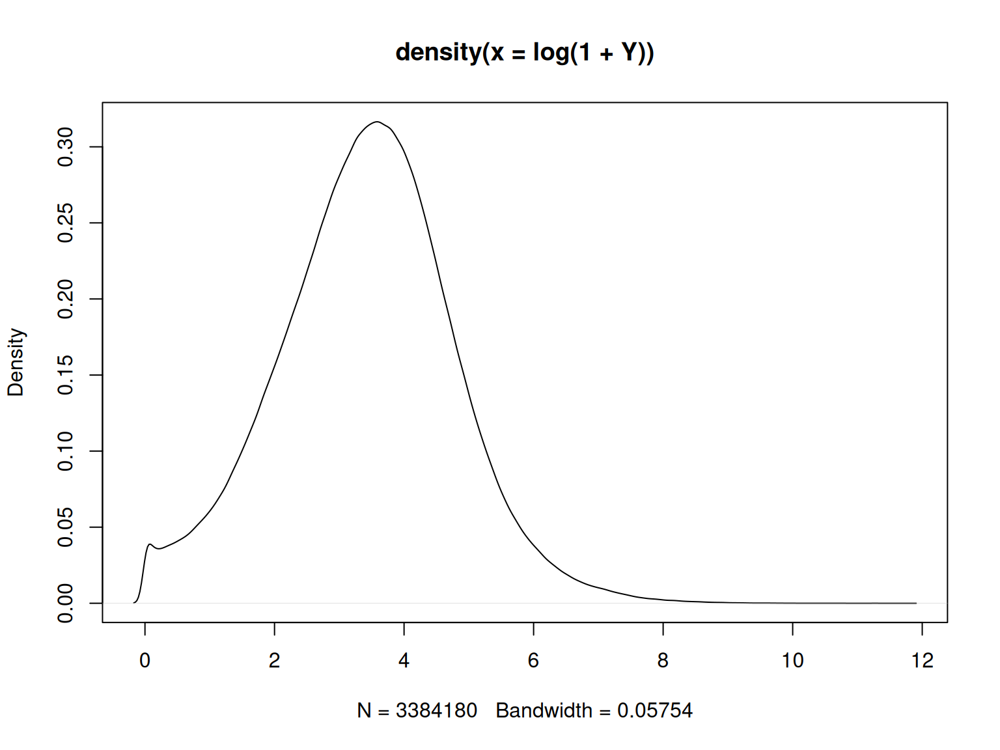
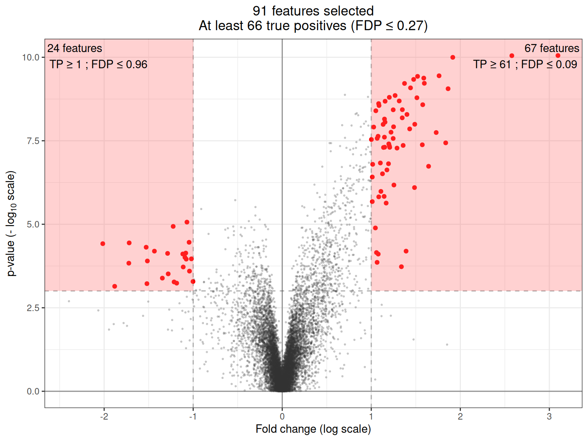
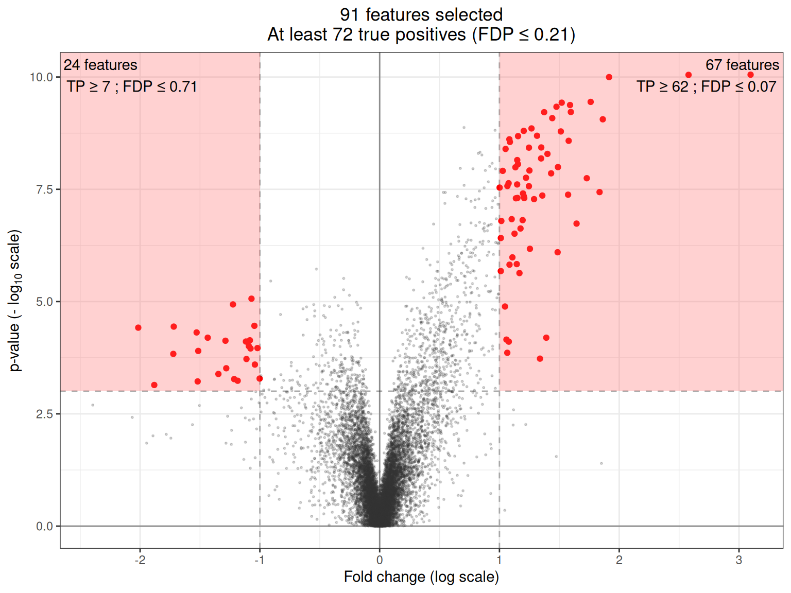

require("ggplot2") || install.packages("ggplot2")
require("sanssouci") || remotes::install_github("sanssouci-org/sanssouci@develop")Case study: differential gene expression analysis
This vignette illustrates the use of quarto to build a reproducible data analysis report.
library("ggplot2")
library("sanssouci")
library("matrixStats")1 Motivation: a differential gene expression study
Differential gene expression studies aim at identifying genes whose mean expression level differs significantly between two (or more) populations, based on a sample of gene expression measurements from individuals from these populations. The data is stored in the package sanssouci.data and can be loaded as follows:
data("RNAseq_blca", package = "sanssouci.data")
Y <- RNAseq_blca
groups <- ifelse(colnames(RNAseq_blca) == "III", 1, 0)
rm(RNAseq_blca)This data set consists of gene expression measurements for \(n = 270\) patients from the Cancer Genome Atlas Urothelial Bladder Carcinoma (TCGA-BLCA) data collection (Cancer Genome Atlas Research Network et al. (2014)). The patients are classified into two subgoups, according to their clinical stage (II or III).
2 Preprocessing
Following standard practice in RNAseq data analysis, we convert these measurements to to count per millions (CPM) in order to make them comparable across samples.
CPM <- Y/colSums(Y)*1e6
plot(density(log(1 + CPM)))
We now filter out genes with very low counts in all samples and plot the corresponding distribution:
ww <- which(rowQuantiles(log(1 + CPM), prob = 0.75) < log(1 + 5))
Y <- CPM[-ww, ]
plot(density(log(1 + Y)))
m <- nrow(Y)
The first mode in Figure 1 has been filtered out in Figure 2.
3 Differential analysis
The goal of this study is to understand the molecular differences at the gene expression level between the stage II and stage III populations. Each patient is characterized by a vector of \(m = 12534\) gene expression values. We aim at addressing the following question:
For which genes is there a difference in the distribution of expression levels between the stage II and stage III populations?
This question can be addressed by performing one statistical test per gene, and to define “differentially expressed” genes as those passing some significance threshold. Below, we use the Wilcoxon rank sum (or Mann-Whitney) test for comparing two independent samples. This is a rank-based non-parametric test. A fast version of this test is implemented in the sanssouci::rowWilcoxonTests function.
We create an object of class SansSouci and run the fit method to use the (parametric) Simes method introduced by Goeman and Solari (2011):
obj <- SansSouci(Y = log(1 + Y), groups = groups)
alpha = 0.1
res_Simes <- fit(obj, B = 0, family = "Simes", alpha = alpha,
rowTestFUN = rowWilcoxonTests) ## B=0 => no calibration!How many genes are differentially expressed? For any user-defined gene subset, the method reports a lower bound on the number of truly differentially expressed genes (DEG), or, equivalently, an upper bound on the proportion of truly differentially expressed genes.
The target risk level is set to \(\alpha = 0.1\), meaning that all of the statements made below will be true with probability greater than \(1-\alpha= 0.9\).
For example, we can consider the following three gene subsets:
- \(S_1\): all genes
- \(S_2\): the 500 most significant genes
- \(S_3\): all genes whose \(p\)-value is below 0.001 and fold change above 0.1:
S1 <- 1:m
p1 <- predict(res_Simes, S = S1)
S2 <- which(rank(pValues(res_Simes)) <= 500)
p2 <- predict(res_Simes, S = S2)
S3 <- which(pValues(res_Simes) < 0.001 & abs(foldChanges(res_Simes)) > 0.1)
p3 <- predict(res_Simes, S = S3)Table Table 1 summarizes the results in a singl table:
pred <- rbind(p1, p2, p3)
labels <- c("all genes",
"500 most significant genes",
"all genes whose $p$-value is below 0.001 and fold change above 0.1")
pred <- data.frame("Gene subset" = labels, pred)
knitr::kable(pred)| Gene.subset | TP | FDP | |
|---|---|---|---|
| p1 | all genes | 928 | 0.9259614 |
| p2 | 500 most significant genes | 479 | 0.0420000 |
| p3 | all genes whose \(p\)-value is below 0.001 and fold change above 0.1 | 766 | 0.1393258 |
4 Volcano plots
A classical practice in gene expression studies is to define DE genes as those passing both a significance filter (small \(p\)-value) and an effect size or “fold change” filter. Here, the fold change of a gene is defined as the difference between the expression medians (on the log scale) of the two groups compared. This double selection by \(p\)-value and fold change corresponds to two sets of genes, with positive/negative fold change, which can be represented in the following plot:
volcanoPlot(res_Simes, p = 1e-3, r = 1)
This type of plot is called a “volcano plot” Cui and Churchill (2003). Post hoc inference makes it possible to obtain statistical guarantees on selections such as the ones represented in the above figure.
5 MA more powerful method
To obtain more informative results, we use the calibration method introduced by Blanchard et al. (2020) and Enjalbert Courrech and Neuvial (2022). This method uses sample label permutations to learn the gene dependence structure and obtain a more powerful method.
obj <- SansSouci(Y = log(1 + Y), groups = groups)
res_perm <- fit(obj, B = 1000, alpha = alpha, family = "Simes",
rowTestFUN = rowWilcoxonTests)The annotations in the corresponding volcano plot illustrate a gain in power (more true positives, lower FDP):
volcanoPlot(res_perm, p = 1e-3, r = 1)
6 Session information
sessionInfo()
#> R version 4.6.1 (2026-06-24)
#> Platform: x86_64-pc-linux-gnu
#> Running under: Ubuntu 24.04.4 LTS
#>
#> Matrix products: default
#> BLAS: /usr/lib/x86_64-linux-gnu/openblas-pthread/libblas.so.3
#> LAPACK: /usr/lib/x86_64-linux-gnu/openblas-pthread/libopenblasp-r0.3.26.so; LAPACK version 3.12.0
#>
#> locale:
#> [1] LC_CTYPE=fr_FR.UTF-8 LC_NUMERIC=C
#> [3] LC_TIME=fr_FR.UTF-8 LC_COLLATE=fr_FR.UTF-8
#> [5] LC_MONETARY=fr_FR.UTF-8 LC_MESSAGES=fr_FR.UTF-8
#> [7] LC_PAPER=fr_FR.UTF-8 LC_NAME=C
#> [9] LC_ADDRESS=C LC_TELEPHONE=C
#> [11] LC_MEASUREMENT=fr_FR.UTF-8 LC_IDENTIFICATION=C
#>
#> time zone: Europe/Paris
#> tzcode source: system (glibc)
#>
#> attached base packages:
#> [1] stats graphics grDevices datasets utils methods base
#>
#> other attached packages:
#> [1] matrixStats_1.5.0 sanssouci_0.16.3 ggplot2_4.0.3
#>
#> loaded via a namespace (and not attached):
#> [1] Matrix_1.7-5 gtable_0.3.6 jsonlite_2.0.0
#> [4] dplyr_1.2.1 compiler_4.6.1 renv_1.1.4
#> [7] tidyselect_1.2.1 scales_1.4.0 yaml_2.3.12
#> [10] fastmap_1.2.0 lattice_0.22-9 R6_2.6.1
#> [13] labeling_0.4.3 generics_0.1.4 knitr_1.51
#> [16] htmlwidgets_1.6.4 tibble_3.3.1 pillar_1.11.1
#> [19] RColorBrewer_1.1-3 rlang_1.3.0 xfun_0.60
#> [22] S7_0.2.2 otel_0.2.0 cli_3.6.6
#> [25] withr_3.0.3 magrittr_2.0.5 matrixTests_0.2.3.1
#> [28] digest_0.6.39 grid_4.6.1 rstudioapi_0.19.0
#> [31] lifecycle_1.0.5 vctrs_0.7.3 evaluate_1.0.5
#> [34] glue_1.8.1 farver_2.1.2 codetools_0.2-20
#> [37] rmarkdown_2.31 tools_4.6.1 pkgconfig_2.0.3
#> [40] htmltools_0.5.97 Reproducibility
To re-build this vignette from its source, use:
quarto::quarto_render("post-hoc_differential-expression_RNAseq.qmd", output_format = "pdf")
# To keep intermediate files, add option 'clean = FALSE' (rmarkdown-based rendering)
quarto::quarto_render("post-hoc_differential-expression_RNAseq.qmd", output_format = "html")8 References
Blanchard, Gilles, Pierre Neuvial, and Etienne Roquain. 2020. “Post Hoc Confidence Bounds on False Positives Using Reference Families.” Annals of Statistics 48 (3): 1281–303. https://projecteuclid.org/euclid.aos/1594972818.
Cancer Genome Atlas Research Network et al. 2014. “Comprehensive Molecular Characterization of Urothelial Bladder Carcinoma.” Nature 507 (7492): 315.
Cui, Xiangqin, and Gary A Churchill. 2003. “Statistical Tests for Differential Expression in cDNA Microarray Experiments.” Genome Biol 4 (4): 210.
Enjalbert Courrech, Nicolas, and Pierre Neuvial. 2022. “Powerful and interpretable control of false discoveries in differential expression studies.” Bioinformatics 38 (23): 5214–21. https://doi.org/10.1093/bioinformatics/btac693.
Goeman, Jelle J, and Aldo Solari. 2011. “Multiple Testing for Exploratory Research.” Statistical Science 26 (4): 584–97.